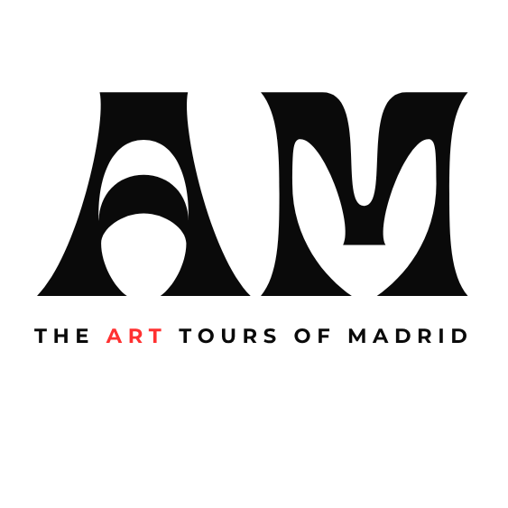

Madrid art tours are no longer available. Read Lockhart is now based in The Hague, Netherlands.
This page is kept as a record of a past professional offering. For art, commissions, exhibitions, or teaching, please use the contact form.

Past Project
Private Museum Tours in Madrid
The Prado, Reina Sofía, and Thyssen-Bornemisza, seen through the eyes of a working artist.
Museums today can overwhelm even experienced visitors. Endless masterpieces, crowded rooms, exhausted feet, and the strange feeling that you've seen everything without truly seeing anything at all.
These tours were designed to slow the experience down through a carefully curated group of paintings shaped around each guest’s interests and level of familiarity with art. Rather than trying to cover the entire museum, we spent real time with a smaller number of works in order to look more deeply and attentively.
The focus was not simply on what art history tells us is important, but on how paintings actually function: color, edge, composition, rhythm, light, narrative, surface, and the decisions that separate truly great paintings from merely accomplished ones.
I approached these museums as a guide and as a professional painter with more than twenty years of experience, having spent years studying, teaching, and returning to these collections. I hold an MFA in Painting from the Pennsylvania Academy of the Fine Arts and previously taught university-level drawing and painting in the United States.
The tours were intended for curious travelers, artists, collectors, students, couples, and anyone seeking a more intimate encounter with great painting.
What Made These Tours Different
- Small groups only. Conversation scale, not cattle herds.
- Responsive, conversational format. Not a script. If something moved a guest, we lingered.
- Focus on how paintings actually work. Color, edge, composition, the decisions painters make.
- Led by a practicing painter. Not a scholar reciting facts, but someone actively wrestling with art.
- Designed for curiosity, not checklist tourism. The point was what guests saw, not how many paintings we covered.
- Direct conversation, not amplified systems. Whenever museum conditions allowed, tours were conducted in normal speaking voices rather than through headset systems. Intentional. Human. Present.
The Three Tours
The Prado Through a Painter's Eyes
How painting evolved from symbol into living perception
The flagship tour. The Prado can overwhelm—endless galleries, masterpieces competing for attention. This tour slowed it down: a curated journey through Bosch, Titian, Rubens, El Greco, Velázquez, Goya, and others, exploring not just what these paintings mean, but how they work: color fighting under thin paint, edges that dissolve or hold firm, compositional rhythms that pull your eye. The decisions that separate masterpieces from the forgettable.
Duration
2 to 2.5 hours — flexible and responsive to each group’s pace. Tours were not shortened unless guests preferred, and could extend if questions, insights, and energy allowed.
What Was Included
A private guided experience with a professional painter. Curated selection of masterworks. Real time spent looking deeply rather than covering the entire museum.
Pricing at the Time
€300 for 1–2 guests
€50 per additional guest
Museum admission was not included. Optional ticket coordination was offered for an additional fee with advance notice.
Guernica and Modernity
War, fragmentation, modernism, and how visual language transformed
Sharper. Smaller. Emotionally concentrated. Guernica hits differently in person—the scale, the intensity, the raw response. This tour sat with it, along with selected modern works, exploring how painters responded to 20th-century fracture. Why abstraction happened. What modernism cost. How vision itself changed.
Duration
60 to 90 minutes — flexible and responsive to each group’s pace. Guernica is emotionally concentrated; timing depended on how deeply guests wanted to go.
What Was Included
A private guided experience with a professional painter. Deep engagement with Guernica. Context and conversation around modernism and twentieth-century art.
Pricing at the Time
€180 for 1–2 guests
€40 per additional guest
Museum admission was not included. Optional ticket coordination was offered for an additional fee with advance notice.
How Painting Changed the Way We See
A walk through centuries—from devotional objects to postwar abstraction
The Thyssen reads almost like a visual history book, told through centuries of paint. Early devotional gold leaf to Venetian color flooding the canvas, Dutch light becoming introspective, Impressionist moments caught mid-breath, abstraction breaking form open, postwar artists rebuilding meaning from fragments. Time travel through how humans learned to see.
Duration
2 to 2.5 hours — flexible and responsive to each group’s pace. Tours were not shortened unless guests preferred, and could extend if questions, insights, and energy allowed.
What Was Included
A private guided experience with a professional painter. A walking tour through the evolution of Western painting. Real time spent with key works across centuries.
Pricing at the Time
€300 for 1–2 guests
€50 per additional guest
Museum admission was not included. Optional ticket coordination was offered for an additional fee with advance notice.
Tour Style
These tours were designed as direct conversations with the paintings themselves rather than formal scripted presentations.
All tours were personal and conducted in normal speaking voices rather than through headset systems.
The goal was to create a more natural, attentive, and human experience inside the museum.
Language
Tours were offered in English only.
Over many years of travel and teaching, I have spent a great deal of time speaking with non-native English speakers and could adjust pace, vocabulary, and conversational complexity when helpful. However, I could not switch fluidly between languages the way larger commercial tour systems sometimes can.
I was learning Spanish at the time, but all tours and discussions were conducted in English in order to maintain clarity, depth, and conversational quality.
Museum Admission
Museum entry fees were separate from tour pricing (typically €5–15 per museum). Guests could purchase tickets themselves, or I could arrange them as described in the tour options above.
A Guest’s Reflection
"Read not only knows art, history, and technique, he knows each museum in detail, tying important works together with captivating and exciting talent. The tours were flexible, enthusiastic, and educational, making it fun. We can't wait to go back and tour the Prado, Reina Sofía, Thyssen, and more with him. Private, smaller tours like his make each dollar spent worthwhile."
Minneapolis · Prado & Thyssen Tours